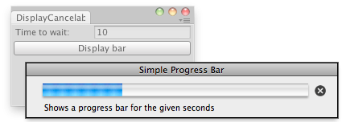

EditorUtility.DisplayCancelableProgressBar
public static bool DisplayCancelableProgressBar(string title,
string info,
float progress);
Description 描述
Displays or updates a progress bar that has a cancel button.
The window title will be set to title and the info will be set to info.
Progress should be set to a value between 0.0 and 1.0, where 0 means nothing done and 1.0 means 100% completed.
This is useful if you perform any lengthy operations in your editor scripts or wizards,
and want to notify the user about the progress.
Return argument of this function tells if user had pressed the cancel button.
It is then your responsibility to stop the task you were doing.
See Also: DisplayProgressBar, ClearProgressBar functions.

Cancelable progress bar in the editor.
using UnityEngine; using UnityEditor;
public class CancelableProgressBarExample : EditorWindow { static int secs = 0; static double startVal = 0; static double progress = 0;
[MenuItem("Example/Cancelable Progress Bar")] static void Init() { // Get existing open window or if none, make a new one: CancelableProgressBarExample window = (CancelableProgressBarExample)EditorWindow.GetWindow(typeof(CancelableProgressBarExample)); window.Show(); }
void OnGUI() { if (secs > 0) { if (GUILayout.Button("Display bar")) startVal = EditorApplication.timeSinceStartup;
progress = EditorApplication.timeSinceStartup - startVal;
if (progress < secs) { if (EditorUtility.DisplayCancelableProgressBar( "Simple Progress Bar", "Shows a progress bar for the given seconds", (float)(progress / secs))) { Debug.Log("Progress bar canceled by the user"); startVal = 0; } } else EditorUtility.ClearProgressBar(); } else secs = EditorGUILayout.IntField("Time to wait:", secs); }
void OnInspectorUpdate() { Repaint(); } }